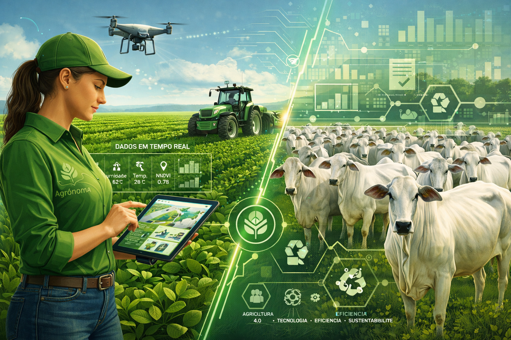

A Encruzilhada Histórica do Agronegócio
A agricultura mundial encontra-se em uma encruzilhada histórica sem precedentes. O setor enfrenta a pressão combinada da necessidade urgente de garantir a segurança alimentar global, a escalada nos custos de insumos químicos e a urgência climática que exige a mitigação imediata de gases de efeito estufa. Diante deste cenário complexo, o conceito de produtividade agrícola precisou ser urgentemente ressignificado.
O Brasil emergiu como o grande protagonista desta nova era, liderando uma transformação silenciosa, mas profundamente tecnológica, pautada no ecossistema do AgroForte: o equilíbrio absoluto entre sustentabilidade, alta performance e preservação ambiental através de práticas avançadas de manejo e produção.
O Redesenho da Ciência Tropical
Historicamente visto como um setor dependente exclusivamente da expansão de fronteiras territoriais e do uso massivo de defensivos e fertilizantes sintéticos, o agronegócio moderno foi completamente redesenhado pela inovação digital e pela biotecnologia tropical. A grande virada de chave do modelo brasileiro consiste em provar que o ganho de eficiência produtiva não exige o avanço sobre novas áreas de mata nativa, mas sim a otimização ecológica profunda do que já está sob cultivo. O manejo da terra deixou de ser uma atividade puramente mecânica e linear para se transformar em uma ciência complexa de análise de dados, monitoramento em tempo real e regeneração biológica do solo.
No coração dessa revolução biológica que fortalece o papel do Brasil no debate global está a substituição inteligente de processos químicos por soluções baseadas na própria natureza. O trabalho de projeção internacional da microbiologista brasileira Mariangela Hungria exemplifica perfeitamente essa transição. Décadas dedicadas ao desenvolvimento e à seleção de bactérias específicas para uso nas lavouras comprovaram que microrganismos são capazes de capturar o nitrogênio diretamente do ar e transferi-lo de forma eficiente para as plantas.

// Matrizes de Impacto e Geopolítica
Selecione as diretrizes abaixo para expandir a análise técnica de bioinsumos e resiliência financeira.
Esse avanço na Fixação Biológica de Nitrogênio (FBN) e no uso de bioinsumos possui um peso geopolítico e econômico estratégico avassalador. Os fertilizantes nitrogenados industriais tradicionais são altamente dependentes de gás natural e, consequentemente, vulneráveis a crises energéticas, oscilações severas de preços no mercado internacional e tensões geopolíticas globais.
Ao adotar o manejo microbiológico em escala tropical, o produtor rural brasileiro não apenas reduz drasticamente seus custos operacionais de produção, mas blinda o país contra instabilidades externas, gerando uma economia anual estimada em bilhões de dólares e oferecendo uma alternativa real e escalável de descarbonização para o planeta.
Além da revolução invisível dos microrganismos, a engenharia de sistemas agrícolas redesenhou a paisagem do campo com a consolidação do Sistema de Integração Lavoura-Pecuária-Floresta (ILPF) e a evolução do Plantio Direto. O plantio direto atua como uma barreira protetora viva, onde a palhada das culturas anteriores permanece sobre o solo, mitigando os efeitos severos da erosão, reduzindo a temperatura da terra e retendo até 40% mais umidade — uma defense vital diante de regimes climáticos cada vez mais instáveis e períodos prolongados de estiagem.
Já o ILPF eleva a eficiência do uso da terra a uma dimensão tridimensional, consorciando a produção de grãos, carne e madeira em uma mesma propriedade e ao longo das mesmas estações. As árvores plantadas geram conforto térmico e sombra para o gado, ao mesmo tempo em que realizam o sequestro maciço de carbono; a pecuária fertiliza o solo de forma orgânica e a lavoura subsequente aproveita os nutrientes residuais da pastagem, viabilizando até quatro safras anuais sem desgastar o ecossistema.

Automação, Algoritmos e Monitoramento IoT
Essa sinergia perfeita entre a biologia do solo e a estrutura de manejo ganha musculatura através da digitalização do campo. O Manejo Integrado de Pragas (MIP) e as práticas de irrigação de precisão agora operam sob o comando de algoritmos de inteligência artificial, sensores IoT (Internet das Coisas) e monitoramento geoespacial por drones.
Em vez de aplicações uniformes e calendarizadas de defensivos ou água em toda a extensão da propriedade, os dados coletados indicam exatamente onde, quando e quanto aplicar. Os bioinseticidas e inimigos naturais são direcionados cirurgicamente apenas aos focos necessários, erradicando o desperdício, protegendo populações de polinizadores locais e reduzindo o consumo hídrico a níveis próximos de zero por meio de gotejamentos subterrâneos automatizados.
Mercado Global e Critérios Verdes
O equilíbrio proposto pelo modelo AgroForte redefine os padrões de competitividade do mercado internacional. O novo perfil de consumidor global e os rigorosos fundos de investimento internacionais não buscam mais apenas commodities baratas; eles exigem rastreabilidade total, certificações verdes e garantias claras de conformidade ambiental.
Código Florestal e Ativos Monetários
Ao alinhar os preceitos do Código Florestal à alta tecnologia de manejo produtivo, o agro brasileiro transforma ativos ambientais, como as Áreas de Preservação Permanente (APPs) e as Reservas Legais, em pilares de sustentabilidade que agregam valor monetário direto ao produto final através do mercado de créditos de carbono.
Ciclos de Produção Infinitos
O impacto prático dessas soluções consolida uma nova métrica para a segurança alimentar do século XXI: produzir mais, custando menos e regenerando o meio ambiente. O conceito do AgroForte prova, em larga escala, que a tecnologia e a preservação ambiental não caminham em direções opostas. Pelo contrário, elas se fundem para criar um ciclo de produção infinito, resiliente e altamente rentável. As práticas modernas de manejo deixaram de ser uma opção puramente ecológica para a agricultura global.
# Terminal de Interação: Deixe seu Comentário
Contribua para o debate sobre inovação digital e práticas de manejo sustentável na agricultura tropical.
Excelente compilação técnica baseada no Plano ABC+. A integração tridimensional de dados hídricos e FBN representa o real estado da arte do campo.